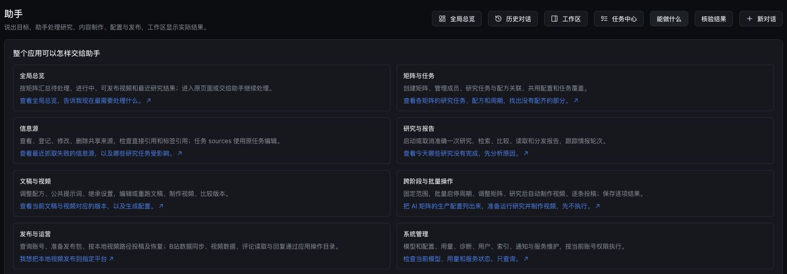

Software / Workflow
Research2Video
研映 · From research to video
A local creative workspace for recurring research, scripts, video production and multi-platform publishing.
In development Still in development. Features and interface keep changing; this is not a released product.

What it is
Matrices and columns organize audiences, sources, intended takeaways and production settings. Start with a question, research report or script, then turn the research and original material into narration, visuals, subtitles and video. An embedded assistant uses the same application capabilities as the web workspace.
Features
- Manage research jobs, sources and schedules by matrix and column
- Write from research and original material while preserving script versions and video records
- Source screenshots, focused details and data graphics synchronized with narration and subtitles
- Produce full episodes or individual items and remake videos from an approved script
- Publishing packages, queues and records for Bilibili, Douyin, Kuaishou and Xiaohongshu
- Use the embedded assistant to query and manage sources, research, production and publishing
Note
The complete production environment has primarily been validated on macOS / Apple silicon. Model, speech-service and platform accounts require configuration.
Screenshots


Stack and platform
Related
LabAI Research System ↗It generates AI research reports automatically, and research reports are one starting point of the Research2Video workflow.LabNarrative Writing Workbench ↗Research2Video turns material into a script; this project breaks the implicit thinking in writing into checkable steps.WorkApplication AtlasAlso a local workbench: Atlas for a library, this one for research to finished video.